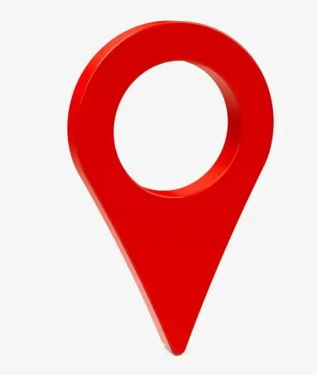


<!DOCTYPE HTML PUBLIC "-//W3C//DTD HTML 4.0 Transitional//EN">
<html xmlns="http://www.w3.org/1999/xhtml">
<head>
    <meta http-equiv="Content-Type" content="text/html; charset=utf-8" />
    <meta name="viewport" content="initial-scale=1.0, user-scalable=no" />
    <style type="text/css">
        body, html {
            width: 100%;
            height: 100%;
            margin: 0;
            font-family: "微软雅黑";
            font-size: 14px;
        }

        #l-map {
            height:95%;
            width: 100%;
        }

        #r-result {
            width: 5%;
        }
    </style>
 
    <script type="text/javascript" src="jquery.min.js"></script>
    <script type="text/javascript" src="http://api.map.baidu.com/api?v=3.0&ak=4VjuV5QPTiTHtvrLRBoMxynnl4T3qU4A"></script>
    <title>关键字输入提示词条</title>


</head>
<body>
    <div id="l-map"></div>
    <div id="r-result"><!--请输入:<input type="text" id="suggestId" size="20" value="百度" style="width:150px;" />-->
    
     <input id="text" type="text" size="2000" style="width:950px; display:block;" />
    </div>
    <!--<div id="searchResultPanel" style="border:1px solid #C0C0C0;width:150px;height:auto; display:none;"></div>-->
</body>
</html>
<!--<script type="text/javascript">
    // 百度地图API功能
    function G(id) {
        return document.getElementById(id);
    }

    var map = new BMap.Map("l-map");
    var point = new BMap.Point(114.085947, 22.547);    // 创建点坐标(经度,纬度)
    map.centerAndZoom(point, 11);                   // 初始化地图,设置中心点坐标和地图大小级别
    map.addOverlay(new BMap.Marker(point));         // 给该坐标加一个红点标记

    map.addControl(new BMap.NavigationControl());   // 添加平移缩放控件
    map.addControl(new BMap.ScaleControl());        // 添加比例尺控件
    map.addControl(new BMap.OverviewMapControl());  //添加缩略地图控件

    map.addControl(new BMap.MapTypeControl());      //添加地图类型控件
    map.enableScrollWheelZoom();                    //启用滚轮放大缩小

    map.centerAndZoom("深圳", 13);                   // 初始化地图,设置城市和地图级别。

    var ac = new BMap.Autocomplete(    //建立一个自动完成的对象
        {
            "input": "suggestId"
            , "location": map
        });

    ac.addEventListener("onhighlight", function (e) {  //鼠标放在下拉列表上的事件
        var str = "";
        var _value = e.fromitem.value;
        var value = "";
        if (e.fromitem.index > -1) {
            value = _value.province + _value.city + _value.district + _value.street + _value.business;
        }
        str = "FromItem<br />index = " + e.fromitem.index + "<br />value = " + value;

        value = "";
        if (e.toitem.index > -1) {
            _value = e.toitem.value;
            value = _value.province + _value.city + _value.district + _value.street + _value.business;
        }
        str += "<br />ToItem<br />index = " + e.toitem.index + "<br />value = " + value;
        G("searchResultPanel").innerHTML = str;
    });

    var myValue;
    ac.addEventListener("onconfirm", function (e) {    //鼠标点击下拉列表后的事件
        var _value = e.item.value;
        myValue = _value.province + _value.city + _value.district + _value.street + _value.business;
        G("searchResultPanel").innerHTML = "onconfirm<br />index = " + e.item.index + "<br />myValue = " + myValue;

        setPlace();
    });

    function setPlace() {
        map.clearOverlays();    //清除地图上所有覆盖物
        function myFun() {
            var pp = local.getResults().getPoi(0).point;    //获取第一个智能搜索的结果
            map.centerAndZoom(pp, 18);
            map.addOverlay(new BMap.Marker(pp));    //添加标注
        }
        var local = new BMap.LocalSearch(map, { //智能搜索
            onSearchComplete: myFun
        });
        local.search(myValue);
    }
</script>-->
<script type="text/javascript">
    var map = new BMap.Map("l-map");
    var point = new BMap.Point(114.085947, 22.547);    // 创建点坐标(经度,纬度)
    map.centerAndZoom(point, 15);
    map.enableScrollWheelZoom(); // 开启鼠标滚轮缩放
    map.addControl(new BMap.ScaleControl()); // 添加比例尺控件

    //map.centerAndZoom("深圳", 13);

    //var map = new BMap.Map("l-map");
    //var point = new BMap.Point(114.085947, 22.547);    // 创建点坐标(经度,纬度)
    //map.centerAndZoom(point, 11);

/*    map.centerAndZoom("深圳", 11);   */
    // 初始化地图,设置中心点坐标和地图大小级别
    //map.addOverlay(new BMap.Marker(point));         // 给该坐标加一个红点标记

    //map.addControl(new BMap.NavigationControl());   // 添加平移缩放控件
    //map.addControl(new BMap.ScaleControl());        // 添加比例尺控件
    //map.addControl(new BMap.OverviewMapControl());  //添加缩略地图控件

    //map.addControl(new BMap.MapTypeControl());      //添加地图类型控件
    //map.enableScrollWheelZoom();                    //启用滚轮放大缩小
    //           // 初始化地图,设置城市和地图级别。
    //map.centerAndZoom(point, 15);
    //var ac = new BMap.Autocomplete(    //建立一个自动完成的对象
    //    {
    //        "input": "suggestId"
    //        , "location": map
    //    });
    var poingtsrtInfo = "114.038748,22.641821,114.047789,22.648128";
    function setInputValue(str) {
        $("#text").val(str);
        poingtsrtInfo = str;
     /*   alert(poingtsrtInfo);*/
        loadInfo();
    }
    loadInfo();
    var pointArr = [];
    function loadInfo() {
        var pointStr = poingtsrtInfo.split(",");

        pointArr = [];

        for (var k = 0; k < pointStr.length; k += 2) {
            pointArr.push({
                lng: pointStr[k],
                lat: pointStr[k + 1]
            });
        }
        // 生成坐标点
        var trackPoint = [];
        for (var i = 0, j = pointArr.length; i < j; i++) {
            trackPoint.push(new BMap.Point(pointArr[i].lng, pointArr[i].lat));
        }
        map.centerAndZoom(trackPoint[0], 15);

        // 画线
        var polyline = new BMap.Polyline(trackPoint, {
            strokeColor: "#ad0e21",
            strokeWeight: 3,
            setStrokeStyle: "dashed",
            strokeOpacity: 1
        });
        map.addOverlay(polyline);
        // 配置图片
        var size = new BMap.Size(22, 22);
        var offset = new BMap.Size(0, 0);
        var imageSize = new BMap.Size(20, 20);
        var icon = new BMap.Icon("3.png", size, {
            imageSize: imageSize,
            infoWindowAnchor: new BMap.Size(0, -3)
        });
      /*  */


        // 画图标
        for (var i = 0, j = trackPoint.length; i < j; i++) {
            var marker = new BMap.Marker(trackPoint[i], {
                icon: icon,
                offset: offset
            }); // 创建标注
            map.addOverlay(marker);
            marker.addEventListener("click", function () {
                // alert(this.getPosition())
                var point = this.getPosition();
                alert("经度：" + point.lng + "\n" + "纬度：" + point.lat)
            })

        }

        //根据经纬极值计算绽放级别。 (从网上复制)
        function getZoom(maxLng, minLng, maxLat, minLat) {
            var zoom = ["50", "100", "200", "500", "1000", "2000", "5000", "10000", "20000", "25000", "50000", "100000", "200000", "500000", "1000000", "2000000"]; // 级别18到3。
            var pointA = new BMap.Point(maxLng, maxLat); // 创建点坐标A
            var pointB = new BMap.Point(minLng, minLat); // 创建点坐标B
            var distance = map.getDistance(pointA, pointB).toFixed(1); //获取两点距离,保留小数点后两位
            for (var i = 0, zoomLen = zoom.length; i < zoomLen; i++) {
                if (zoom[i] - distance > 0) {
                    return 18 - i + 3; //之所以会多3，是因为地图范围常常是比例尺距离的10倍以上。所以级别会增加3。
                }
            }
        }

    }
    

    //  (从网上复制)
    function setZoom(points) {
        if (points.length > 0) {
            var maxLng = points[0].lng;
            var minLng = points[0].lng;
            var maxLat = points[0].lat;
            var minLat = points[0].lat;
            var res;
            for (var i = points.length - 1; i >= 0; i--) {
                res = points[i];
                if (res.lng > maxLng) maxLng = res.lng;
                if (res.lng < minLng) minLng = res.lng;
                if (res.lat > maxLat) maxLat = res.lat;
                if (res.lat < minLat) minLat = res.lat;
            }
            var cenLng = (parseFloat(maxLng) + parseFloat(minLng)) / 2;
            var cenLat = (parseFloat(maxLat) + parseFloat(minLat)) / 2;
            var zoom = getZoom(maxLng, minLng, maxLat, minLat);
            map.centerAndZoom(new BMap.Point(cenLng, cenLat), zoom);
        } else {
            //没有坐标，显示全中国
            map.centerAndZoom(new BMap.Point(114.085947, 22.547), 13);
        }
        //var input_val = $("#text").val();
        //alert(input_val);
    }

    setZoom(pointArr);
 
</script>